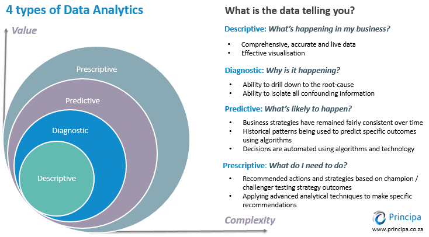
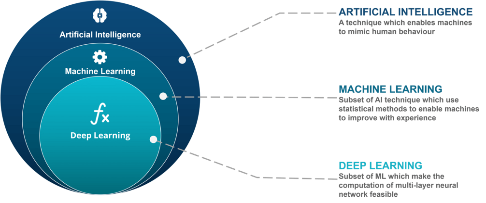
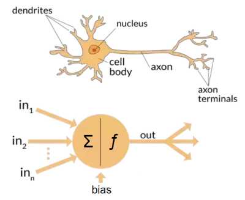

Lecture 1: Foundational Concept of Deep Learning#
DS413 | Deep Learning
Instructional Material
Welcome learners! This guide covers foundational concepts, including the background, history, and evolution of deep learning, and clarifies its distinctions from AI and ML. We delve into the mechanics of deep learning, explaining neural networks, the backpropagation method, types of deep neural networks, and their applications. Additionally, we highlight real-world use cases and current trends in deep learning, and focus on specific algorithms such as Convolutional Neural Networks (CNNs) and strategies for improving both Deep Neural Networks (DNNs) and CNNs. Whether you’re a beginner or an experienced practitioner, this material provides valuable insights and practical knowledge to harness the power of deep learning.
I. Foundational Concept of Deep Learning#
Before diving into the exciting developments in deep learning, let’s review what we’ve learned so far. First, we’ll discuss the concept of data analytics. Data analytics involves the systematic examination of raw data to draw meaningful conclusions and insights. Many techniques and processes in data analytics have been automated using algorithms and mechanical procedures, making it easier for humans to interpret large datasets. Businesses leverage data analytics to enhance performance using software tools to collect and analyze data.
The 4 Types of Data Analytics#

Descriptive Analytics
Summarizes historical data to understand past events. Uses aggregation and data mining to provide insights.Diagnostic Analytics
Examines data to determine causes of past outcomes. Techniques like drill-down, data discovery, and correlation are used.Predictive Analytics
Uses statistical models and machine learning to forecast future events.Prescriptive Analytics
Recommends actions to achieve desired results using optimization and simulation.
Example Scenario#
Dr. Jake is a medical doctor and CEO of Astro JR, a pharmaceutical company in the Philippines. Using analytics, answer the following:
Descriptive: How many infected cases since last week?
Diagnostic: What factors affect demand for the COVID-19 vaccine?
Predictive: How many deaths next week?
Prescriptive: How many hospital staff should be available if cases increase?
Laboratory Task 1#
Instruction: From the scenario above, create two additional inquiries for each type of data analytics.
Descriptive:
Diagnostic:
Predictive:
Prescriptive:
Artificial Intelligence vs. Machine Learning vs. Deep Learning#

Artificial Intelligence (AI): is the broadest concept and encompasses the idea of creating machines or systems that can perform tasks that typically require human intelligence. This includes problem-solving, understanding natural language, recognizing patterns, and making decisions. AI can be achieved through various techniques, including ML and DL.
Machine Learning (ML): is a subset of AI that focuses on the development of algorithms and statistical models that enable computers to learn from and make predictions or decisions based on data. ML doesn’t require explicit programming for every task but relies on the algorithm’s ability to improve its performance as it encounters more data.
Deep Learning (DL): is a subfield of ML that deals specifically with artificial neural networks, which are composed of multiple layers of interconnected nodes (neurons). DL excels at handling unstructured data, such as images, audio, and text, and has been particularly successful in tasks like image recognition, natural language processing, and speech recognition.
Comparison Table#
Machine Learning |
Deep Learning |
|---|---|
Requires small training data |
Requires large training data |
Manual feature engineering |
Features learned automatically |
Problem-focused |
End-to-end learning |
Easier to interpret |
Output reasoning can be complex |
Works on low processing power |
Needs high processing power |
Historical Background of Deep Learning#
Warren Sturgis McCulloch (1898 – 1969) neurophysiologist and logician and mathematician Walter Pitts (1923 – 1969) are best known for their influential paper in computing and neural network computing A Logical Calculus of Ideas Immanent in Nervous Activity (1943). They were the first to create a mathematical model of a neuron, inspired by the concept of a biological neuron. This led to the development of ever more sophisticated neuron and neural network models and their astounding success in artificial intelligence.

Neural networks are computational models inspired by the intricate structure of the human brain. They consist of layers of interconnected artificial neurons that process and transform information. Just as the neurons in the brain communicate through synapses, these artificial neurons pass signals and weights between them, allowing neural networks to learn and make complex decisions. This bio-inspired architecture enables neural networks to excel in tasks such as image recognition, natural language processing, and pattern recognition, making them a foundational technology in the field of artificial intelligence.

1940s: Shallow Neural Networks
1960s-70s: Automatic differentiation (AD) by Linnainmaa
1980s: Backpropagation popularized by Rumelhart, Hinton, Williams
2006: Deep Belief Networks introduced by Hinton
2012: AlexNet architecture
2014-2017: VGG, GANs, ResNet, DenseNet, Wasserstein GAN
Neural networks are inspired by the human brain, consisting of interconnected artificial neurons processing information.
Applications of Deep Learning#
Computer Vision: One of the most visible areas is computer vision. Models like convolutional neural networks have allowed machines to “see” and interpret images. This is the foundation of facial recognition on our phones, automated quality checks in factories, and even life-saving applications such as detecting tumors from X-ray or MRI scans. A decade ago, this level of accuracy in image recognition seemed far off, yet today it’s already part of our everyday lives.
Natural Language Processing: In the area of language and communication, deep learning has transformed how we interact with technology. Natural language processing systems now power machine translation, sentiment analysis, and intelligent assistants. The leap from early, stiff translation tools to fluid and context-aware models like GPT or Google Translate demonstrates just how much deep learning has changed the way machines understand human language.
Speech Recognition: Another breakthrough has been in speech recognition. Tasks that once required specialized systems, like converting spoken words into text, are now accessible on any smartphone. From transcribing meetings to enabling voice-controlled devices, deep learning has made human–computer interaction much more seamless.
Autonomous Vehicles: Deep learning also plays a central role in autonomous systems, particularly self-driving cars. Cars equipped with cameras and sensors rely on neural networks to recognize pedestrians, interpret traffic signs, and make split-second driving decisions. This same principle extends to drones and robots that navigate unpredictable environments without direct human control.
Healthcare: The field of healthcare has also embraced deep learning in profound ways. Beyond medical imaging, it is being used to predict diseases, assist in drug discovery, and even recommend personalized treatment plans. These tools not only support doctors but also expand access to better healthcare worldwide.
Recommender Systems: Another familiar application comes from recommender systems. The reason Netflix knows what movie you might want to watch, or why YouTube lines up the next video so perfectly, is because deep learning models study user behavior and adjust recommendations accordingly. While it keeps us entertained, it also demonstrates how powerful these models are in shaping digital experiences.
Generative AI: Finally, there’s the creative frontier—generative AI. Tools like GANs and diffusion models allow machines to create new content, from realistic images and videos to music and art. What started as amusing experiments, like the clumsy “Will Smith eating spaghetti” video, has now developed into highly convincing media that blurs the line between real and artificial.
Lecture Task 1#
Instruction: Create a 1-page reaction paper about the YouTube video “Machine Learning: Living in the Age of AI | A WIRED Film”.
Guiding Questions:
What are the most significant AI advancements highlighted in the video?
How does the video envision the future of AI?
How can society balance AI benefits and potential drawbacks?